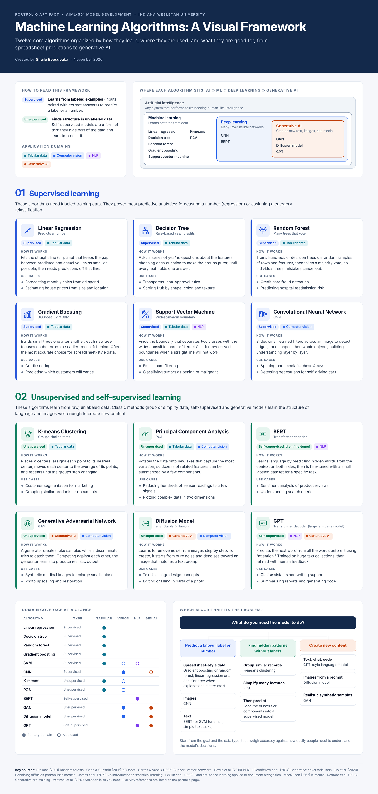

Introduction
This artifact is based on my AIML-501 Model Development portfolio assignment on algorithm types and their application domains.
Choosing the right algorithm is one of the first and most important decisions in any machine learning project. This framework serves as a quick reference for that decision.
Description
The framework organizes twelve algorithms into two groups by learning type. Supervised algorithms (linear regression, decision tree, random forest, gradient boosting, support vector machine, and convolutional neural network) learn from labeled examples. Unsupervised and self-supervised algorithms (K-means clustering, principal component analysis, BERT, generative adversarial network, diffusion model, and GPT) learn from unlabeled data.
Each algorithm card shows its learning type, its application domains (tabular data, computer vision, natural language processing, or generative AI), a plain-language explanation of how it works, and two real-world use cases. Three visuals show how the algorithms relate to one another: a nested diagram of AI, ML, deep learning, and generative AI; a domain coverage matrix; and a decision guide that points from a goal to a suitable algorithm.

The full infographic. Select the image to open it at full size, or download the PDF above.
Objective
- Identify and categorize core machine learning algorithms by learning type and application domain
- Explain how each algorithm works in plain language, with real-world use cases
- Show how learning type and data type guide algorithm selection, including for generative AI
Process
- Reviewed course resources on the differences between AI, machine learning, deep learning, and generative AI
- Selected twelve algorithms that cover both learning types and all four application domains
- Verified each algorithm's mechanism and typical uses against its original research paper or a standard textbook
- Classified each algorithm and wrote a short explanation and two use cases for each
- Designed a color system: blue for supervised, green for unsupervised, and a separate color for each domain
- Added a nested diagram, a coverage matrix, and a decision guide so readers can compare algorithms, not just read about them one at a time
- Exported the final design as a high-resolution image for the web and a PDF for download
Tools and Technologies Used
Value Proposition
This framework turns a crowded field of algorithms into a single page that answers two practical questions: what each algorithm does, and when to use it. It shows that I can organize technical material clearly and explain it to both technical and non-technical audiences.
Unique Value: Connects algorithms instead of listing them in isolation, placing each one in the AI hierarchy, across four domains, and in a goal-based decision guide that includes today's generative AI models.
Relevance: Useful for analytics and AI roles where professionals must match a business problem to the right AI approach and explain that choice to decision-makers.
References
Breiman, L. (2001). Random forests. Machine Learning, 45(1), 5–32. https://doi.org/10.1023/A:1010933404324
Chen, T., & Guestrin, C. (2016). XGBoost: A scalable tree boosting system. In Proceedings of the 22nd ACM SIGKDD International Conference on Knowledge Discovery and Data Mining (pp. 785–794). https://doi.org/10.1145/2939672.2939785
Cortes, C., & Vapnik, V. (1995). Support-vector networks. Machine Learning, 20(3), 273–297. https://doi.org/10.1007/BF00994018
Devlin, J., Chang, M.-W., Lee, K., & Toutanova, K. (2019). BERT: Pre-training of deep bidirectional transformers for language understanding. In Proceedings of the 2019 Conference of the North American Chapter of the Association for Computational Linguistics: Human Language Technologies (pp. 4171–4186). https://doi.org/10.18653/v1/N19-1423
Goodfellow, I., Pouget-Abadie, J., Mirza, M., Xu, B., Warde-Farley, D., Ozair, S., Courville, A., & Bengio, Y. (2014). Generative adversarial nets. Advances in Neural Information Processing Systems, 27, 2672–2680.
Ho, J., Jain, A., & Abbeel, P. (2020). Denoising diffusion probabilistic models. Advances in Neural Information Processing Systems, 33, 6840–6851.
James, G., Witten, D., Hastie, T., & Tibshirani, R. (2021). An introduction to statistical learning: With applications in R (2nd ed.). Springer. https://doi.org/10.1007/978-1-0716-1418-1
LeCun, Y., Bottou, L., Bengio, Y., & Haffner, P. (1998). Gradient-based learning applied to document recognition. Proceedings of the IEEE, 86(11), 2278–2324. https://doi.org/10.1109/5.726791
MacQueen, J. (1967). Some methods for classification and analysis of multivariate observations. In Proceedings of the Fifth Berkeley Symposium on Mathematical Statistics and Probability (Vol. 1, pp. 281–297). University of California Press.
Radford, A., Narasimhan, K., Salimans, T., & Sutskever, I. (2018). Improving language understanding by generative pre-training [Technical report]. OpenAI. https://cdn.openai.com/research-covers/language-unsupervised/language_understanding_paper.pdf
Vaswani, A., Shazeer, N., Parmar, N., Uszkoreit, J., Jones, L., Gomez, A. N., Kaiser, Ł., & Polosukhin, I. (2017). Attention is all you need. Advances in Neural Information Processing Systems, 30, 5998–6008.